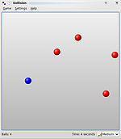
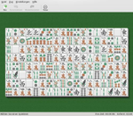
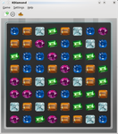

KDE-Spiele
Dieser Artikel wurde für die folgenden Ubuntu-Versionen getestet:
Ubuntu 16.04 Xenial Xerus
Ubuntu 14.04 Trusty Tahr
Zum Verständnis dieses Artikels sind folgende Seiten hilfreich:
Die KDE Community bietet auch eine Reihe von Spielen  an. Hierbei handelt es sich z.B. um bekannte Brettspiele wie Mahjongg oder Reversi oder um Klone bekannter Spiele wie Tetris oder Snake.
an. Hierbei handelt es sich z.B. um bekannte Brettspiele wie Mahjongg oder Reversi oder um Klone bekannter Spiele wie Tetris oder Snake.
Da es sich um "kleine" Spiele für zwischendurch handelt, sind die Anforderungen an die Hardware äußerst gering. Auf einem Rechner, auf dem KDE Plasma läuft, werden auch die KDE-Spiele ohne Probleme laufen. Die GNOME-Games bieten eine ähnliche Zusammenstellung von Spieleklassikern.
Installation¶
Die KDE-Spiele werden über folgendes Metapaket installiert [1]:
kdegames (universe)
 mit apturl
mit apturl
Paketliste zum Kopieren:
sudo apt-get install kdegames
sudo aptitude install kdegames
Grundsätzlich sind die Spiele auch einzeln installierbar, die jeweiligen Paketname sind in den Tabellen weiter unten angegeben.
Ab Plasma5 also 15.04 können nur die Spiele einzeln installiert werden, außer die Spielkarten Sammlung KPatience. KPatience ist eine Sammlung von vierzehn Solitär-Kartenspielen wie Klondike, Spider und FreeCell.
Kpatience wird installiert über folgendes Metapaket:
kpat (ab Ubuntu 15.04)
mit apturl
Paketliste zum Kopieren:
sudo apt-get install kpat
sudo aptitude install kpat
Benutzung/Konfiguration¶
Die Spiele sind im Startmenü erreichbar über "K-Menü -> Spiele". Dort findet man dann die verschiedenen Spiele in den Kategorien "Arkade", "Brettspiele", "Kartenspiele", "Logikspiele", "Spiele für Kinder" und "Strategie & Taktik"
Arkade¶
In dieser Kategorie findet man die folgenden Spiele:
| Arkade | |||
| Spielname | kurze Beschreibung | Paketname | Bildschirmfoto |
| Bomber | ein Bombardierspiel | bomber | |
| Granatier | ein Bomberman-Klon | granatier | |
| Kapman | ein Pac-Man-Klon | kapman | |
| KBlocks | ein Tetris-Klon | kblocks | |
| KBounce | simples Spiel mit Suchtfaktor - der Raum für springende Bälle muss mit Mauern eingegrenzt werden, ohne dass es zu Kollisionen mit den Bällen kommt | kbounce |  |
| KBreakOut | ein Breakout-Klon | kbreakout | |
| KGoldrunner | ein Loderunner-Klon | kgoldrunner | |
| Kolf | ein einfaches Golfspiel, es stehen verschiedene Plätze zur Auswahl | kolf | |
| Kollision | ein Kollisionsspiel, bei dem man Bällen ausweichen muss | kollision |  |
| KSnake | ein Snake-Klon - Einspielervariante von KSnakeDuel | ktron | |
| KSpaceDuel | ein Weltraum-Spiel; auch für 2 Spieler geeignet | kspaceduel | |
| KSnakeDuel | ein Snake-ähnliches Spiel, basierend auf der Rennszene aus dem Film "Tron" | ksnakeduel |  |
Brettspiele¶
Hier findet man einige bekannte Brettspiele:
| Brettspiele | |||
| Spielname | kurze Beschreibung | Paketname | Bildschirmfoto |
| Bovo | ein "Fünf-Gewinnt" Spiel (Gomoku) | bovo | |
| KBlackBox | Klon von Emacs BlackBox, ein Logikspiel | kblackbox | |
| Kigo | ein Go-Klon | kigo | |
| Kiriki | ein Kniffel-ähnliches Spiel | kiriki | |
| Kajongg | Klon des klassischen chinesischen Brettspiels Mah-Jongg. | kajongg | |
| KMahjongg | KMahjongg ist eine Solitaire-Variante des chinesischen Brettspiels Mah-Jongg. | kmahjongg | |
| KReversi | ein Reversi-Spiel | kreversi | |
| KSquares | ein Käsekästchen-Spiel | ksquares |  |
| Shisen-Sho | ein Mahjonng-ähnliches Spiel | kshisen |  |
| Vier gewinnt | der Name sagt alles; auch für 2 Spieler geeignet | kfourinline | |
Kartenspiele¶
KDE-Spiele enthält diese Kartenspiele:
| Kartenspiele | |||
| Spielname | kurze Beschreibung | Paketname | Bildschirmfoto |
| Offiziersskat | vereinfachte Skatvariante mit zwei Spielern; auch für 2 Spieler und Spiele über das Netzwerk geeignet | lskat | |
| Patiencen legen | verschiedene Patience-Varianten, unter "Einstellungen -> Spielart" kann man aus 17 verschiedenen Patiencen wählen | kpat | |
Logikspiele¶
Hier kann man aus den folgenden Spielen wählen:
| Logikspiele | |||
| Spielname | kurze Beschreibung | Paketname | Bildschirmfoto |
| KDiamond | Ein Spiel, bei dem durch Vertauschen benachbarter Steine Reihen von mindestens drei gleichen Steinen entfernt werden | kdiamond |  |
| KSudoku | Das bekannte Rätsel-Spiel Sudoku. | ksudoku | |
| Kubrick | Eine 3D-Spiel-Version des Rubikwürfel | kubrick | |
| Bilderpuzzle | Ein Puzzlespiel. Neben vorgegebenen Motiven können auch eigene Bilder importiert werden. | palapeli | |
| Picmi | Ein Nonogramm-Puzzlespiel. | picmi | |
Spiele für Kinder¶
Zur Zeit ist hier (leider) nur ein Spiel enthalten:
| Spiele für Kinder | |||
| Spielname | kurze Beschreibung | Paketname | Bildschirmfoto |
| Kartoffelknülch | Es stehen mehrere Motive (Kartoffelknülch, Ägypten, Mond, Weihnachten, etc.) zur Auswahl, welche per Drag & Drop mit weiteren Gegenständen und Objekten versehen werden. Das Ergebnis lässt sich auch ausdrucken und speichern. | ktuberling | |
Strategie & Taktik¶
Hier kann man aus den folgenden Spielen wählen:
| Strategie & Taktik | |||
| Spielname | kurze Beschreibung | Paketname | Bildschirmfoto |
| KAtomic | Sokoban-ähnliches Spiel, bei dem Moleküle aus Atomen zusammen geschoben werden müssen | katomic | |
| Killbots | ein Robots-Klon | killbots | |
| KJumpingCube | Reversi-ähnliches Spiel mit zusätzlichen Elemente | kjumpingcube | |
| KMines | ein Minesweeper-Klon | kmines | |
| Kolor Lines | Kugeln gleicher Farbe müssen durch strategisches Verschieben in Reihen gruppiert werden | klines | |
| Konquest | strategisches Brettspiel, bei dem es darum geht, die Planeten des Gegner unter die eigene Kontrolle zu bekommen; auch für mehrere Spieler geeignet | konquest | |
| KSirK | ein Risiko-Klon | ksirk | |
| Probiere und Klickety | durch geschicktes Löschen sind möglichst viele gleicher Kugeln zu kombinieren | klickety | |
| KNetWalk | ein Spiel für den Systemadministrator. Es muss der Aufbau eines Netzwerkes simuliert werden. mehr | knetwalk | |
| Naval Battle | ein Klon des Spieleklassikers Schiffe versenken. | knavalbattle | |
 Übersichtsartikel
Übersichtsartikel- Erstellt mit Inyoka
-
 2004 – 2017 ubuntuusers.de • Einige Rechte vorbehalten
2004 – 2017 ubuntuusers.de • Einige Rechte vorbehalten
Lizenz • Kontakt • Datenschutz • Impressum • Serverstatus -
Serverhousing gespendet von